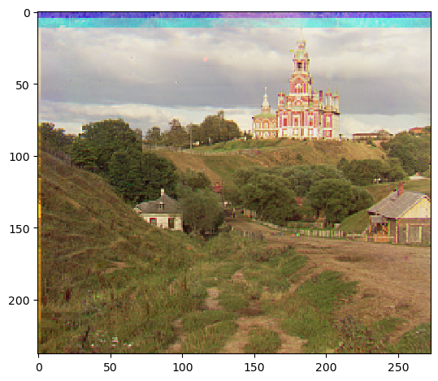
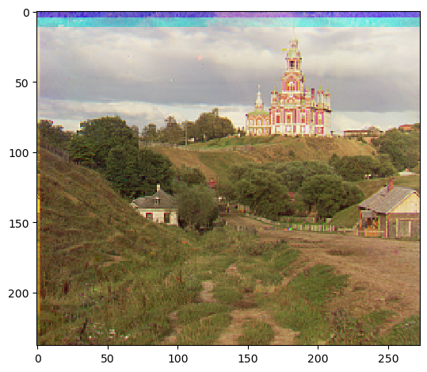
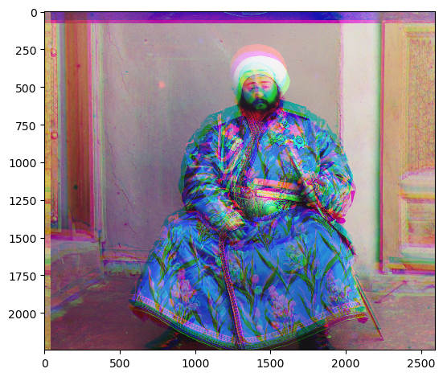
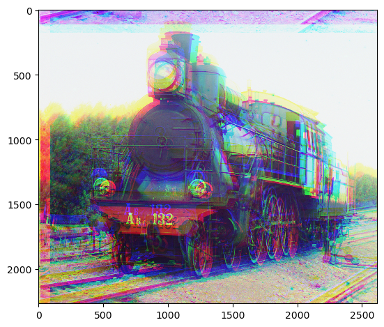

cathedral.jpg
Green: (5, 2)
Red: (12, 3)
 monastery.jpg
Green: (-3, 2)
Red: (3, 2)

tobolsk.jpg
Green: (3, 3)
Red: (6, 3)

putting images on each other LOL ctrl f to find the stuff
First, I processed and prepared the .jpg image by splitting it into three equal sections, cropping the outer 15% of the image to remove the dark or black borders and yield a more accurate alignment. I then aligned the images by exhaustively searching over the interval [-15, 15] and finding the best alignment based on Normal Cross-Correlation (NCC). A higher NCC meant a better alignment. Finally, I returned the image with the best alignment, or highest NCC.
cathedral.jpg
Green: (5, 2)
Red: (12, 3)
 monastery.jpg
Green: (-3, 2)
Red: (3, 2)
tobolsk.jpg
Green: (3, 3)
Red: (6, 3)
In order to process larger .tif images, I used image pyramids. I processed every image using the same method as I did in the single-scale alignment. Then, I rescaled the image by 0.5 , halving its size for 3 iterations. This means that the pyramid has 3 levels of 0.5 , 0.25 and 0.125 of the original image. I aligned the images starting from the coarsest level (level 3 , 0.125 of the original image), adding each level's displacement multiplied by 2^level to d = (dx, dy) , initialized to (0, 0) . Finally, I used d as the displacement to align the original .tif image and returned it.
church.tif
Green: (48, 8)
Red: (86, -8)

emir.tif
Green: (78, 44)
Red: (58, 40)
 harvesters.tif
Green: (90, 34)
Red: (90, 14)
icon.tif
Green: (70, 34)
Red: (90, 46)
lady.tif
Green: (82, 16)
Red: (90, -6)

melons.tif
Green: (90, 4)
Red: (90, 4)

onion_church.tif
Green: (82, 56)
Red: (90, 66)
sculpture.tif
Green: (94, -30)
Red: (210, -78)

self_portrait.tif
Green: (170, 80)
Red: (210, 114)

three_generations.tif
Green: (130, 42)
Red: (202, 30)

train.tif
Green: (114, 18)
Red: (178, 94)
